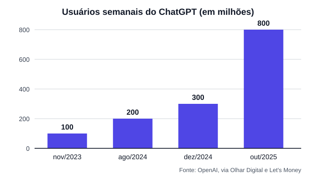

O boom da inteligência artificial
Para entender por que um videogame ficou mais caro, é preciso começar longe dele: no crescimento das ferramentas de IA e nos prédios cheios de servidores que as fazem funcionar.
Da curiosidade ao uso diário
O ChatGPT foi lançado no fim de 2022 e virou o exemplo mais conhecido de IA generativa. Em novembro de 2023 ele tinha 100 milhões de usuários por semana. O número dobrou em agosto de 2024, passou de 300 milhões em dezembro de 2024 e chegou a 800 milhões em outubro de 2025.

Em maio de 2026, a empresa de pesquisa Sensor Tower estimou que o ChatGPT passou de 1 bilhão de usuários ativos por mês, mais rápido do que TikTok, Instagram e YouTube chegaram à mesma marca.
A corrida dos data centers
O que é um data center de IA
É um prédio com milhares de servidores equipados com processadores gráficos (GPUs) e memórias muito rápidas. Cada pergunta feita a uma IA é processada ali, e treinar um modelo novo pode ocupar esses servidores por semanas.
Quanto está sendo investido
- A consultoria Dell'Oro Group prevê que o investimento mundial em data centers passe de 1 trilhão de dólares em 2026.
- Amazon, Google, Meta e Microsoft planejavam, juntas, entre 595 e 625 bilhões de dólares em investimentos para 2026.
- Só a Amazon anunciou cerca de 200 bilhões de dólares para o ano, e a Alphabet, dona do Google, até 185 bilhões.
Por que isso chega na memória
Os chips de IA precisam de uma memória especial, a HBM (memória de alta largura de banda). Ela é feita pelas mesmas três empresas que respondem por mais de 90% da memória RAM do mundo: Samsung, SK Hynix e Micron. Quando a fábrica produz HBM, deixa de produzir a memória comum usada em PCs, celulares e consoles.
Estimativas de mercado indicam que os data centers de IA devem ficar com cerca de 70% dos chips de memória produzidos em 2026. Em dezembro de 2025, a Micron chegou a anunciar o fim da Crucial, sua marca vendida ao consumidor, para concentrar a produção na IA.
Veja na página de hardware como isso mudou o preço da memória RAM e das placas de vídeo.
Fontes
- Olhar Digital: ChatGPT já conta com 200 milhões de usuários semanais (30/08/2024)
- Olhar Digital: ChatGPT supera 300 milhões de usuários semanais (04/12/2024)
- Let's Money: ChatGPT atinge 800 milhões de usuários semanais (outubro de 2025)
- Olhar Digital: ChatGPT chega a um bilhão de usuários mensais em três anos (02/06/2026)
- Mobile World Live: investimento em data centers deve passar de US$ 1 trilhão, segundo a Dell'Oro (2026, em inglês)
- eMarketer: planos de investimento de 600 bilhões de dólares das big techs (2026, em inglês)
- Tecnoblog: data centers de IA vão consumir 70% dos chips de memória (2026)
- Olhar Digital: crise global de RAM (09/12/2025)